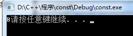

const is the abbreviation of constant, originally meaning unchanging and not easily changed. In C++, it is used to modify built-in type variables, custom objects, member functions, return values, and function parameters.
C++ const allows specifying a semantic constraint that the compiler enforces, allowing the programmer to tell the compiler that a value remains unchanged. If there is indeed a value that remains unchanged during programming, you should explicitly use const, so that you can get the compiler's help.
1. const modifies variables of ordinary types
const int a = 7; int b = a; // 正确 a = 8; // 错误，不能改变
a is defined as a constant, and a can be assigned to b, but a cannot be assigned again. Assigning to a constant is illegal, because a is considered a constant by the compiler and its value is not allowed to be modified.
Now look at the following operations:
Example
For the const variable a, we take the address of the variable, cast and assign it to a pointer to int, then use *p = 8; to reassign the value at the address of variable a, and then output to check the value of a.
From the debug window below, we can see that the value of a has been changed to 8, but the output result is still 7.


From the result, we can see that the compiler then considers the value of a to be 7 as initially defined, so operations on const a produce the above situation. Therefore, never try to assign a value to a const variable, as this will produce unexpected behavior.
If you don't want the compiler to notice the above operations on const, we can add the volatile keyword before const.
The volatile keyword is the opposite of const; it means changeable and easily changed. Therefore, it will not be optimized by the compiler, and the compiler will not change its operations on the variable a.
Example
The output result is 8, as we expected.

2. const modifies pointer variables
const modifying pointer variables has the following three cases.
- A: If const modifies what the pointer points to, then the content is immutable.
- B: If const modifies the pointer, then the pointer is immutable.
- C: If const modifies both the pointer and what it points to, then both the pointer and the pointed-to content are immutable.
For A:
const int *p = 8;
Then the content pointed to by the pointer, 8, cannot be changed. In short, "left fixes the value" because const is on the left side of the * sign.
For B:
int a = 8; int* const p = &a; *p = 9; // 正确 int b = 7; p = &b; // 错误
For the const pointer p, the memory address it points to cannot be changed, but its content can be changed. In short, "right fixes the direction" because const is on the right side of the * sign.
For C:It is the combination of A and B.
int a = 8; const int * const p = &a;
At this time, both the content pointed to by const p and the memory address it points to are fixed and cannot be changed.
For the three cases A, B, and C, according to the different positions of const relative to the * sign, I summarize three phrases for easy memory:"Left fixes the value, right fixes the direction, const modifies invariants."。
3. const parameter passing and function return values
For const modifying function parameters, it can be divided into three cases.
A: const modifies pass-by-value. Generally, this case doesn't need const modification, because the function automatically creates a temporary variable to copy the argument value.
Example
B: When the const parameter is a pointer, it can prevent the pointer from being accidentally tampered with.
Example
C: For parameter passing of custom types, a temporary object is needed to copy the parameter. Constructing the temporary object requires calling the constructor, which is a waste of time. Therefore, we use const plus reference passing.
Moreover, for common built-in types such as int and double, we do not use reference passing.
Example
Output result8。
For const modifying the return value of a function.
Const modifying return values is divided into three cases.
A: const modifying the return value of a built-in type has the same effect as not modifying it.
Example
B: const modifies a custom type as the return value. In this case, the returned value cannot be used as an lvalue; it cannot be assigned or modified.
C: const modifies the returned pointer or reference. Whether to return a pointer to const depends on what we want the user to do.
4. const modifies class member functions
const modifying a class member function aims to prevent the member function from modifying the value of the called object. If we do not want to modify the value of a calling object, all member functions should be declared as const member functions.
Note:The const keyword cannot be used together with the static keyword, because the static keyword modifies static member functions, and static member functions do not contain a this pointer, i.e., they cannot be instantiated. A const member function must be specific to a particular instance.
The following get_cm()const; function uses a const member function:
Example
If get_cm() removes the const modifier, then even though the const _tt passed to Cmf does not change the object's value, the compiler still considers that the function will change the object's value. Therefore, we should, as required, make all functions that do not need to change object content const member functions.
What if a member function wants to modify a particular member of the object? In this case, we can use the mutable keyword to modify that member. mutable also means changeable and easily changed. A member modified by the mutable keyword can be in a constant state of change, as in the following example.
Example
Here, in Kf()const, we modify the value of _ct through ++_ct;, but modifying _cm through ++_cm will cause an error, because ++_cm is not modified with mutable.
Original article address: https://www.cnblogs.com/Forever-Kenlen-Ja/p/3776991.html